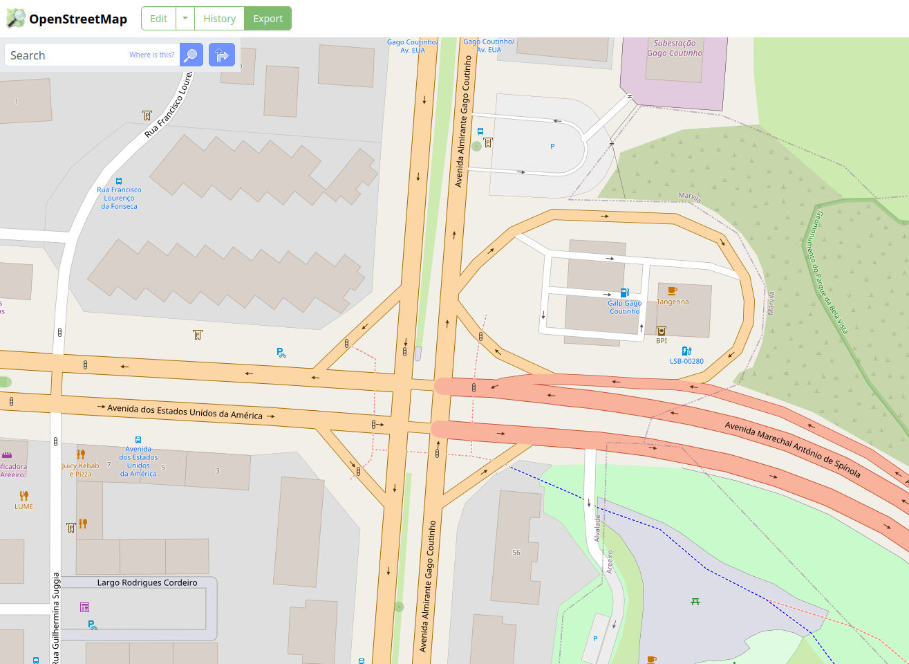

Micro Case Study
You may use an intersection file already prepared to be used with VISSIM, like this one:
This file is available at Fenix, for registered students.
Watch out that the CRS of this file may not be adjusted to the basemap!
Also, some adjustments to the network (such as the connectors) may be needed.
How did this file was converted from OpenStreetMap? üßê
From OpenStreetMap to VISSIM
Requirements
This will require:
OpenStreetMap
Go to OpenStreetMap and zoom into your area.
Select Export and save the map.osm file.

You don’t need to open that file now.
OSM2VISSIM tool
- Go to the OSM2VISSIM tool Github page, and download this
OSM2VISSIM_v0.1.pyfile.
- Create a folder (wherever you want) and put there this
.pyfile and the.osmfile exported before. Now copy your folder path!
- If you have OSGeo4W installed2, open the shell. It will look like this:
- Navigate to your created folder, using
cd yourfolderpath - Now, run
python OSM2VISSIM_v0.1.py
- This will open a dialogue window where you are supposed to type your
.osmfile name.
Mine isgago
- Press Set.
Don’t worry! Things are happening even if you don’t notice. Just be patient and wait.
This will create a new file, and open VISSIM automatically.
Note: If you go to the Network tab and don’t see anything, even after clicking on zoom to network button, close VISSIM, and close the Shell. This happened to me every first time.
- Repeat again the steps from 1 to 7.
This will open VISSIM automatically and now the shell will show things happening:
Wait until VISSIM it closes automatically - don’t click anything.
- You may now close the OSGeo4W shell.
A few more files were created now:
At VISSIM
Open the file name.inpx and close the Start Page.
At Network Editor panel, click Show entire network:
As you may note, your network is not exactly in place, when comparing to a basemap. ü•¥
To adjust this, you may either move the basemap or the network.
First, with the distance tool, measure the distance of one reference point of the network to where it should be placed, in both X and Y directions.
Then Edit ⟶ Move Network
Repeat the process until the network intersection is centred with the intersection in the basemap.
Save your network file! üéâ
This process resulted in the abovementioned file.
No go on and adjust the details that require some attention.